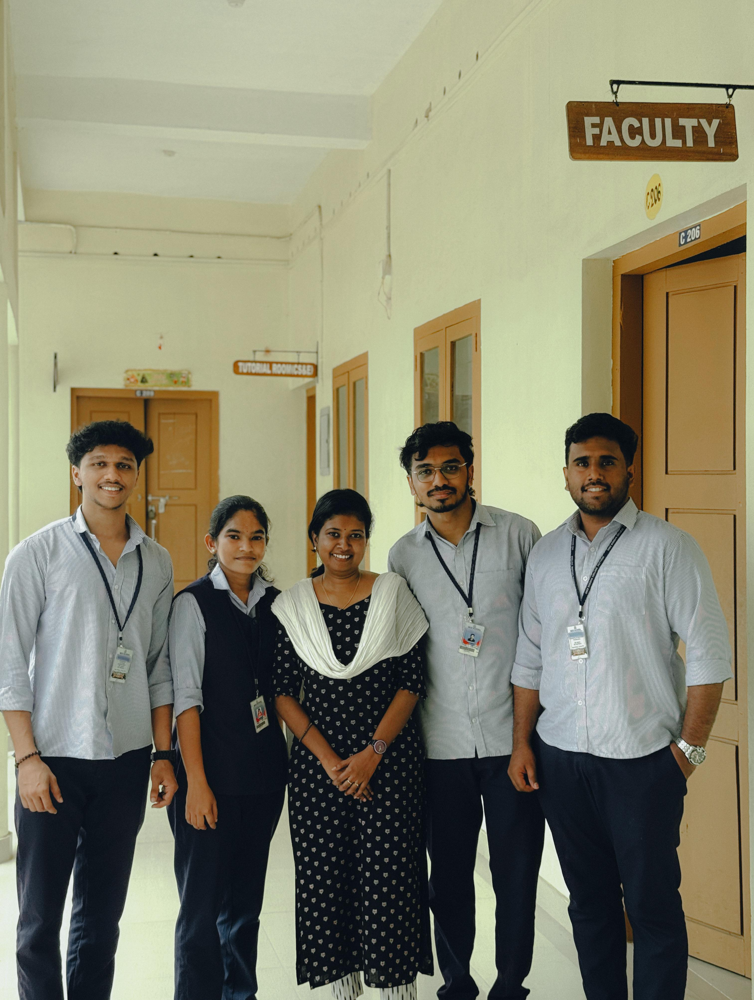
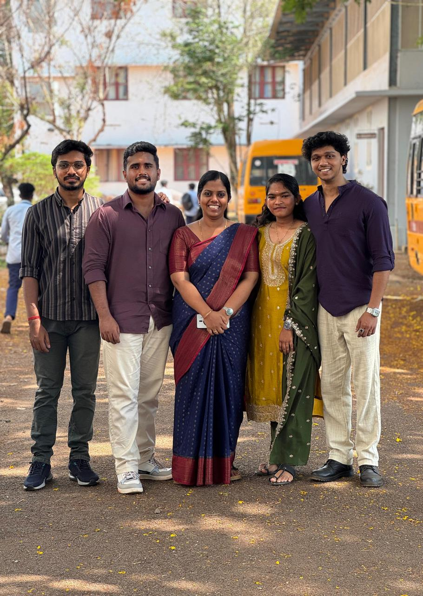
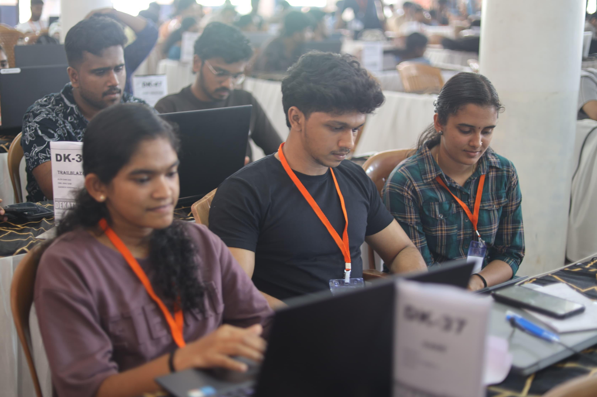
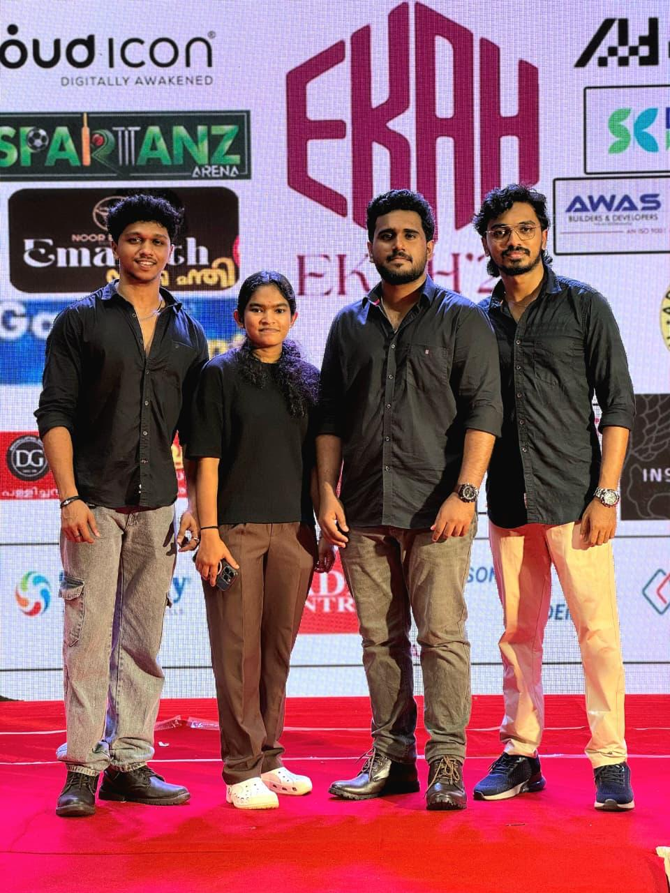
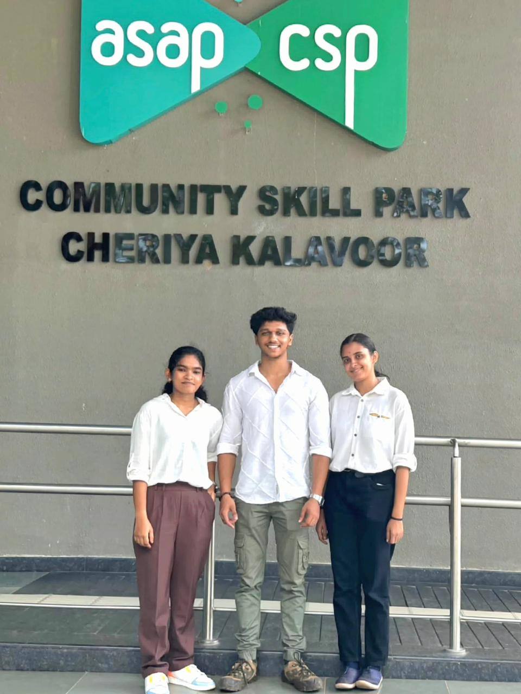
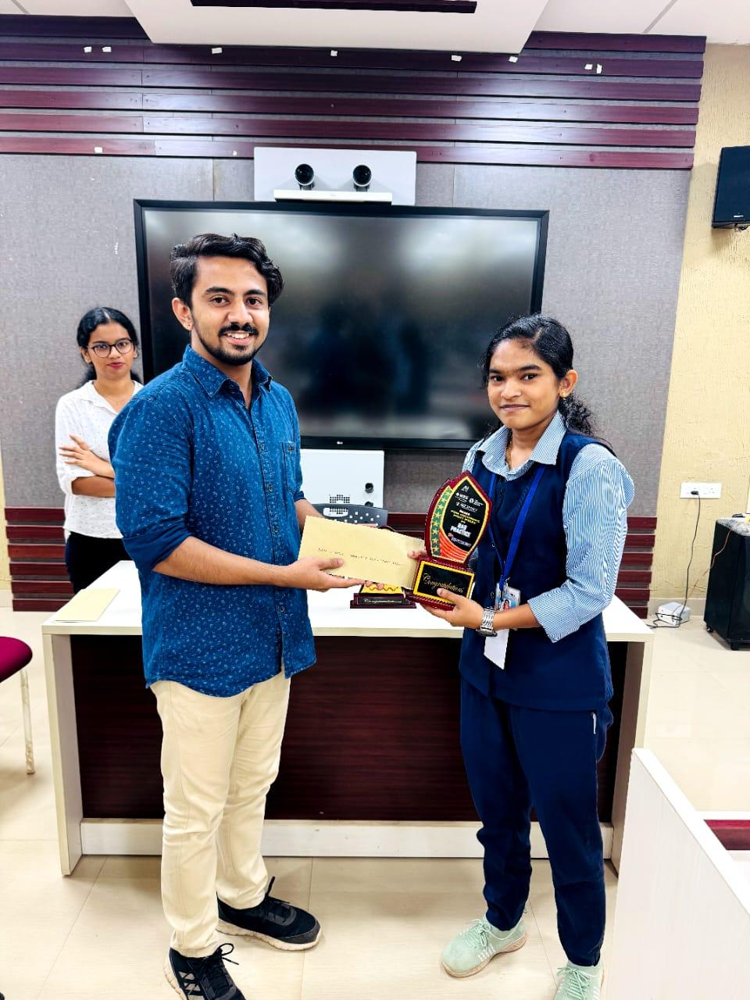

AI & machine learning
PyTorch · scikit-learn · Deep learning · LLaMA 3.2 · RAG · NLP
Applied in NeuroWeaveAI / ML development
& Python backends
CSE graduate. IEEE-published researcher.
Building thoughtful, practical AI products.
01 / About
I'm Anjana, a CSE graduate and IEEE-published researcher, focused on AI/ML, generative AI, and backend development.
PyTorch · scikit-learn · Deep learning · LLaMA 3.2 · RAG · NLP
Applied in NeuroWeavePython · FastAPI · Flask · REST APIs · Git · Docker · Linux
Applied in StellarisAIpandas · NumPy · EDA · ETL · PostgreSQL · MySQL · SQL
Data preparation work02 / Selected work
03 / Research
Connectome analysis and deep learning for neurological recovery prediction using MRI data.
Co-author
Personalized AI for smart hiring through language models, retrieval-augmented generation, and natural language processing.
Second author
04 / Experience
Full Stack Web Development with AI Tools
Successfully completed the Student Development Program on Full Stack Web Development with AI Tools under the Next Gen Employability Program, supported by Edunet Foundation, EY, and AICTE.
Sree Buddha College of Engineering
Newsletter editorship alongside my engineering and research work.
Kerala, India · CGPA 9.03 / 10
Higher Secondary (Science) · RVSM HSS · 2020–2022 · 96%
Secondary School · Sree Narayana Central School · 2020
A selection of milestones, competitions, and experiences along the way.

01 / 06
IEEE ICCPCT · 2025
Our mini-project became “Stellaris AI: Personalized AI for Smart Hiring,” a peer-reviewed paper published at IEEE ICCPCT 2025.
As second author, I co-authored “Stellaris AI: Personalized AI for Smart Hiring,” published at the 2025 8th International Conference on Circuit, Power & Computing Technologies (ICCPCT). Our system replaces static résumés with interactive candidate assistants built on a fine-tuned LLaMA 3.2 1B model, allowing recruiters to explore skills through context-aware conversations. I’m grateful to my teammates and co-authors Aryan S, Alen Sam Das, and Daewoo Krishna S for the creativity, dedication, and teamwork that brought this project to publication. Our sincere thanks go to our guide, Dr. Anju J Prakash, whose expert insights, encouragement, and unwavering support helped shape the research at every stage.
Read publication ↗
02 / 06
ICIETSD · 2026
Presented our AI-driven framework for stroke lesion segmentation and neurological recovery analysis using MRI data.
Our main project, “ReMind: Connectome Analysis for Predicting Neurological Recovery,” was successfully presented at the International Conference on Innovations in Emerging Technologies for Sustainable Development (ICIETSD), 2026. The work focuses on an AI-driven framework for automated stroke lesion segmentation and recovery analysis using MRI data, with the aim of supporting more efficient and informed clinical decision-making. I’m grateful to my teammates Aryan S, Alen Sam Das, and Daewoo Krishna S for their dedication and collaboration, and to our guide, Geethumol PV, for her patient mentorship, technical guidance, and unwavering support throughout the project.
Read publication ↗
03 / 06
Dekathon 3.0 · Indo-Malaysian International Hackathon
Joined 75 teams and 225 participants for a 72-hour international hackathon, turning ideas into prototypes through collaboration and mentorship.
Together with Aryan S and Aishwarya Ammal S, I took part in Dekathon 3.0, a 72-hour Indo-Malaysian International Hackathon. Across 75 teams and 225 participants, we worked through intensive ideation, prototyping, and problem-solving sessions, supported by mentorship and structured workshops. The experience deepened our understanding of innovation and collaborative problem-solving, with lessons to carry into future projects.

04 / 06
ELYSIA Project Competition
Our ReMind team won third prize for an AI-powered application designed to support recovery prediction for stroke and TBI patients using 3D MRI scans.
Our team won third prize at the ELYSIA Project Competition for “ReMind: Connectome Analysis for Predicting Neurological Recovery.” The AI-powered application is designed to assist doctors in predicting recovery outcomes for stroke and traumatic brain injury patients using 3D MRI scans. This was a team effort alongside Aryan S, Alen Sam Das, and Daewoo Krishna S. Our mentor, Geethumol PV, guided us from model architecture through real-world deployment, helping turn the concept into a practical application.

05 / 06
Dreamvestor 2.0 · ASAP Kerala
Qualified for and presented “Optimized Lightweight LLMs for Resource-Constrained Environments” at the Round 3 district-level stage.
Our team qualified for and presented our idea, “Optimized Lightweight LLMs for Resource-Constrained Environments,” at the Round 3 district-level stage of Dreamvestor 2.0 by ASAP Kerala. The opportunity marked a milestone in taking our idea to a wider audience and sharing our approach to language models for environments with limited computing resources.

06 / 06
IEEE SB SBCE & Mulearn SBC · 2025
Won the RAG coding competition with a Llama 3 Medical AI Assistant, built around structured symptoms, medications, and healthcare information.
I won first prize in the RAG Coding Competition at AI Insight 2025, organized by IEEE SB SBCE and Mulearn SBC at Sree Buddha College of Engineering. Within the competition timeframe, I built a Medical AI Assistant using Llama 3 and a structured dataset covering symptoms, medications, and healthcare information. The chatbot was designed to provide precise, real-time responses to medical inquiries. The experience strengthened my interest in practical AI applications and collaborative problem-solving.
06 / Contact
Open to AI/ML and software development internships.